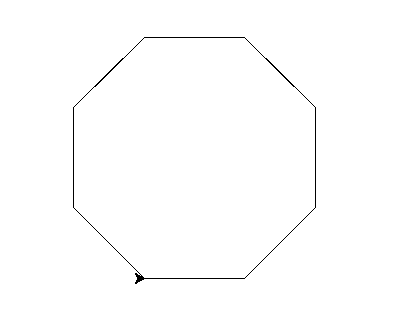

Submit the following programs via Gradescope:
- Due Date: February 14 Think CS: Chapters 1 & 2; Lab1
Write a program that prints "Hello, World!" to the screen.
Hint: See Lab 1.
- Due Date: February 15 Think CS: Chapter 4; Lab 1
Write a program that draws an octagon. Use the sample turtle programs from class to get started.

Note: Whenever submitting a turtle program, choose a name for your file that is not turtle.py. When executing the "import turtle" statement, the computer first looks in the folder where the file is saved for the turtle module and then in the libraries (and other places on the path). So, it thinks the module is itself, causing all kinds of errors. To avoid this, name your program something like "myTurtle.py" or "program2.py".Hint: See Lab 1.
- Due Date: February 16 Think CS: Chapter 4; Lab 1
Write a program that implements the pseudocode ("informal high-level description of the operating principle of a computer program or other algorithm") below:
Repeat 36 times: Walk forward 100 steps Turn left 145 degrees Walk forward 10 steps Turn right 90 degrees Walk forward 10 steps Turn left 135 degrees Walk forward 100 steps
- Due Date: February 20 Think CS: Chapter 2
Write a program that will print "I love Python!" 25 times.
The output of your program should be:
I love Python! I love Python! I love Python! I love Python! I love Python! I love Python! I love Python! I love Python! I love Python! I love Python! I love Python! I love Python! I love Python! I love Python! I love Python! I love Python! I love Python! I love Python! I love Python! I love Python! I love Python! I love Python! I love Python! I love Python! I love Python!
- Due Date: February 21 Think CS: Chapter 4
Write a program that uses the turtle package to draw a 5-pointed star.
Your output should look like this:

Hint: For the 5-pointed star, the turtle turns 2 complete revolutions (720 degrees). How much does the turtle need to turn at each point?
- Due Date: February 22 Think CS: Chapter 2
&
Section 4.4
Write a program that prints out the numbers from 0 to 14.
The output of your program should be:
0 1 2 3 4 5 6 7 8 9 10 11 12 13 14
Hint: Use a loop and print out the index or loop variable.
- Due Date: February 27 Think CS: Chapters 2 & Chapter 9
Using the string commands introduced in Lab 2, write a Python program that prompts the user for a message, and then prints the message, the message in upper case letters, and the message in lower case letters.
A sample run of your program should look like:
Enter a message: Mihi cura futuri Mihi cura futuri MIHI CURA FUTURI mihi cura futuri
Another run:
Enter a message: I love Python! I love Python! I LOVE PYTHON! i love python!
Hint: Your program should be able to take any phrase the user enters and prints it, it in upper case letters, and it in lower case letters. To do that, you need to store the phrase in a variable and print variations of the stored variable.